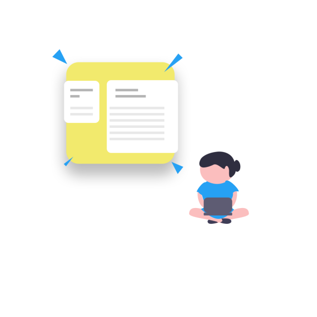
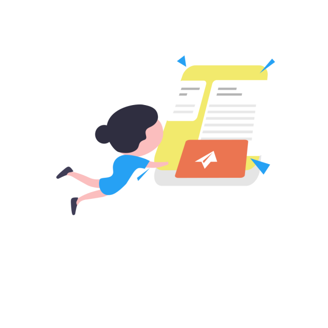

How Civis Works
In India, you are the superhero of the country, and the guardian of our destiny.
Laws meant for you and I can be shaped by people like you and I.
The process where you share feedback with the government on how a policy may impact you and your community, is known as a public consultation.
- Select a consultation.
- Read the summary.

- Have you stumbled upon a document open for consultation?
- Click on ‘Submit A Consultation’
- Discuss the document and ask questions.
- Choose a response, or write your own.
- Submit your response!
- Share the consultation with friends.

- Add a few details like the title and deadline, and share the link to the document.
- Select the department the consultation has been shared by, or add a department.
- Submit the consultation, our moderators will take a look and make it public.